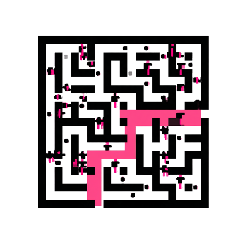

Nous construisons ce qui manquait à votre équipe.
À partir de la cartographie, nous construisons exactement ce qui manque : agents, automatisations et outils internes, branchés sur les logiciels que vous utilisez déjà. Une première version fonctionnelle 8 jours après la cartographie.
- Quick wins d'abord
- 1er outil en service 8 jours après la cartographie
- Sur vos outils existants
- Une personne valide

Sortir du labyrinthe, une étape à la fois.
La cartographie montre chaque impasse. Nous traçons le chemin le plus court vers la sortie : les quick wins d'abord, classés par impact et par effort.
- #1Factures lues et rapprochées automatiquementQuick win · fort impact · faible effort
- #2Validations en un clic, plus par emailQuick win · fort impact · faible effort
- #3Paiements préparés automatiquementEnsuite · fort impact · effort modéré
- #4Tableau de bord en direct pour les 4 sitesGros chantier
Plan d'exemple pour le groupe de restaurants fictif de la cartographie.
Les quick wins d'abord. Les gros chantiers ensuite.
Chaque piste repérée pendant la cartographie est placée sur deux axes : le temps qu'elle fait gagner et l'effort qu'elle demande. On commence en haut à gauche, là où les gains arrivent le plus vite, puis on planifie les projets plus lourds.
Les points numérotés reprennent les 4 actions du plan d'exemple ci-dessus.
Voici ce que vous avez au jour 8 du chantier.
Pas un PowerPoint : un outil qui fonctionne. Ici, le quick win n°1 du plan : les factures conformes sont enregistrées toutes seules, et le manager ne voit que celles qui présentent un écart, avec la raison.
- Branché sur vos outils
- Une personne valide
- Utilisé dès le jour 8
Essayez : validez une facture ou interrogez le fournisseur.
- ✓Fournisseur A · facture 1042Conforme à la commande et à la livraisonEnregistrée
- !Fournisseur B · facture 2210Prix unitaire différent du prix négocié
- ✓Fournisseur C · facture 0877Conforme à la commande et à la livraisonEnregistrée
- !Fournisseur D · facture 3301Deux cartons manquants sur le bon de livraison
Outil d'exemple fictif
Nous connectons, nous ne remplaçons pas.
Votre équipe garde les outils qu'elle connaît. Nous branchons les liens manquants entre eux, pour que l'information circule toute seule au lieu d'être ressaisie.
 Email
Email Tableurs
Tableurs Logiciel comptable
Logiciel comptable CRM
CRM Stock & commandes
Stock & commandes Banque
Banque Messagerie d'équipe
Messagerie d'équipe Votre site
Votre site
Plus qu'un outil.
L'outil qui fonctionne
En ligne, branché sur vos logiciels, utilisé par votre équipe.
Une documentation claire
Ce qu'il fait, comment il marche, quoi faire quand quelque chose change.

Une prise en main par votre équipe
Nous montrons à votre équipe comment utiliser les outils en toute confiance, au quotidien.
Quelqu'un à appeler
Un interlocuteur qui connaît votre entreprise et vos outils.
Nous restons à vos côtés.
Nous suivons le temps gagné, ajustons ce qui doit l'être et passons au quick win suivant. Les outils grandissent avec votre entreprise.
- v1.0En ligne avec l'équipeJour 8
- v1.1Ajusté après les premiers retoursPremières semaines
- v1.2Quick win suivant : validations en un clicEn cours
- suiteMesurer le temps gagné, choisir le suivantChaque mois
Construisons votre premier quick win.
Gratuit, sans engagement. On commence par un court appel, puis nous interviewons vos équipes et cartographions la façon dont le travail se fait vraiment.
Ou écrivez à l'équipe : contact@zurisolutions.dev